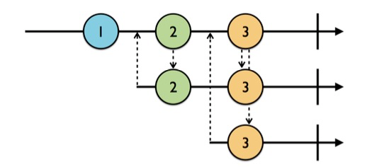
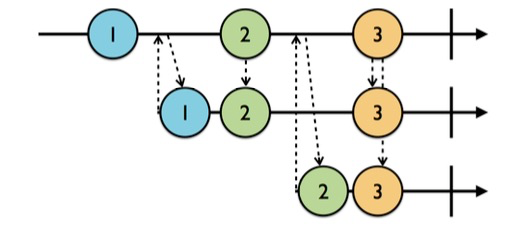
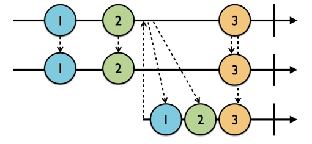

最近比较忙，更新得有点慢，望谅解。
上一章我介绍了Observable——一个功能就像一条数据流的类。这一章的内容比较简单，Subject和Observable还是挺相似的，如果说Observable是专门用来被订阅获取数据的一个“被动”的类，那么比起Observable，Subject倒是占据了一点主动。
它可以作为一个被订阅者供给外部订阅，也可以作为一个观察者，接收事件，然后发出给订阅者。所以它要比Obsavable更加的灵活一点，按照我的理解，它应该是一种支持一边接收事件，一边接收订阅者的类。也就是说，我可以先创建一个Subject，不着急定制里面的事件（Event），然后先让它被某个订阅者订阅，再往里塞入事件，这样子也可以让订阅者作出响应。我觉得在上代码之前，徒有文字描述应该是相当抽象的了，但是在那之前，我还是得先介绍一下RxSwift里的四种Subjects。
PublishSubject，它会为订阅者发送订阅前接收到的最后一个元素，当然，新事件也会发送。 Subject，它实际上等同于包了一层BehaviorSubject，它里面有一个value属性等同于最近接收的一个元素，但是它本身不继承自Observable。需要调用它自带的asObservable()方法进行转化后才能被订阅。 注：我想你可能会好奇为什么我在介绍这四种
subjects的时候老是提到元素这个词而不是事件这个词，元素实际上说的就是next事件中包含的元素。我会这么说的原因主要是上面提到的表现是subjects的主要表现，而它们都针对于next事件，一旦出现一个error或者completed的事件导致它们终结，它们的行为也会变得不一样。
因为不知道怎么用中文称呼subject相关的类，但是它的功能有点像一个针对于Observable数据流的观察者，所以我就称它为观察者吧！
为了方便测试，我们先写下一些功能代码：
enum MyError: Error {
case anError
}
func print<T: CustomStringConvertible>(label: String, event: Event<T>) {
print(label, event.element ?? event.error ?? event)
}我前面提到，subject是一种可以一边收发事件，一边接收订阅的神奇物种，而PublishSubject是一种只对订阅者发出新元素的类，下面我将用代码来演示一下：
let subject = PublishSubject<Int>()
subject.onNext(1)
subject.subscribe { print(label: "PS)", event: $0) }
.addDisposableTo(disposeBag)
subject.onNext(2)
/*
输出：
PS） 2
*/从这段代码里就可以看出来，PublishSubject是只对订阅者发送新接收的信息的，而旧的消息则不会发出。
为了让这个原理更清晰，我们在上面的代码片继续添加如下代码：
subject.subscribe { print(label: "PS2)", event: $0) }
.addDisposableTo(disposeBag)
subject.onNext(3)
/*
输出：
PS) 3
PS2) 3
*/所以，对PublishSubject新增了一次订阅，它并不会把之前接收的元素1, 2, 3发送给第二次订阅。给出它的示意图：

向上的箭头代表着一次订阅，乡下的箭头代表着
subject对订阅者发送元素。
BehaviorSubject是一个会向当前订阅发送最近接收的那个元素的功能类，因为有这样的要求，所以初始化一个BehaviorSubject一定要有一个初始值。 上代码：
let subject = BehaviorSubject(value: 1)
let disposeBag = DisposeBag()
subject
.subscribe { print(label: "BS)", event: $0) } //BS) 1
.addDisposableTo(disposeBag)
subject.onNext(2) //BS) 2
subject
.subscribe { print(label: "BS2)", event: $0) } //BS2) 2
.addDisposableTo(disposeBag)
subject.onNext(3) //BS) 3
//BS2) 3
/*
输出结果：
BS) 1
BS) 2
BS2) 2
BS) 3
BS2) 3
*/为了方便理解，我在每次订阅打印出信息的位置都额外添加了注释，以便让你看懂订阅后打印出对应信息的“位置”（或者说——顺序）。从上面就可以看出来，BehaviorSubject是会对订阅者发送最近的那次订阅的。给出示意图：

ReplaySubject会自带一个缓冲区，所以每次初始化的时候需要赋给它一个缓冲区大小。每次它接收到新的元素，都会先存放到自己的缓冲区里，按缓冲区大小来存放指定数量的元素（实际上BehaviorSubject就是一个缓冲区大小为1的ReplaySubject），然后在每次订阅发生的时候，则向订阅者发送缓冲区内的所有元素，然后才发送新接收到的元素。给出一个缓冲区大小为2的ReplaySubject的示意图：

给出样例代码以及输出：
let subject = ReplaySubject<String>.create(bufferSize: 2)
let disposeBag = DisposeBag()
subject.onNext("1")
subject.onNext("2")
subject
.subscribe { print(label: "RS)", event: $0) } //RS) 1
.addDisposableTo(disposeBag) //RS) 2
subject.onNext("3") //RS) 3
subject
.subscribe { print(label: "RS2)", event: $0) } //RS2) 2
.addDisposableTo(disposeBag) //RS2) 3
/*
输出结果：
RS) 1
RS) 2
RS) 3
RS2) 2
RS2) 3
*/Variable实质上是一个对BehaviorSubject还封装了一层的subject，它本身并不继承自Observable，所以它并不能被订阅，它有一个value属性用于访问它最近（也是最后）接收到的一个元素，所以对于Variable你甚至不需要订阅就能访问到它的数据流里的元素。而为了订阅到一个Variable实例的数据流，你得通过它的asObservable()方法去获取到它底层的BehaviorSubject才可以进行订阅。
并且，对于Variable而言，你无法像对其它subjects那样用onNext(element)、onCompleted()或者onError(MyError.anError)来让它收到一个新的事件，甚至，它根本没法接收一个completed或者error事件。你只能通过Variable.value属性来为Variable添加一个新的元素。
还有，由于它是基于BehaviorSubject的封装，所以初始化一个Variable对象的时候也需要指定一个初始值。
var variable = Variable("Initial value")
let disposeBag = DisposeBag()
variable.value = "New initial value"
variable.asObservable() //.asObservable() to access its underlying behavior subject
.subscribe { print(label: "V)", event: $0) }
.addDisposableTo(disposeBag)
variable.value = "1"
variable.asObservable()
.subscribe { print(label: "V2)", event: $0) }
.addDisposableTo(disposeBag)
variable.value = "2"
/*
输出结果：
V) New Initial Value
V) 1
V2) 1
V) 2
V2) 2
*/completed和error事件的？那dispose()呢？文章也有点长度了，避免你忘记了我之前定义的一个枚举，我把它再定义一次：
enum MyError: Error {
case anError
} let subject = PublishSubject<Int>()
let disposeBag = DisposeBag()
subject.onNext(1)
subject.subscribe { print(label: "PS)", event: $0) }
.addDisposableTo(disposeBag)
subject.onNext(2)
subject.onNext(3)
subject.onCompleted()
subject.subscribe { print(label: "PS2)", event: $0) }
.addDisposableTo(disposeBag)
subject.onNext(4)
/*
输出结果：
PS) 2
PS) 3
PS) completed
PS2) completed
*/是的，就和Observable数据流的表现类似，当你向一个subject发送一个completed事件的时候，subject所拥有的数据流也会被标记终结，当你再往它推送新的元素，它也不会再发给订阅者。除此之外，它还将对新来的订阅者发送导致它终结的事件，这点对于所有的subjects都适用。而这也是为什么你会看到PS2)接收到了completed事件的原因（按照PublishSubject的功能，它不应该会发出一个订阅之前就接收到了的事件）。
个人观点，
PublishSubject在接收到completed或者error的事件的时候，表现得就像BehaviorSubject一样。
把上面那段代码中的subject.onCompleted()方法替换为：
subject.onError(MyError.anError)效果和onCompleted()差不多，只不过会输出错误，就不多赘述了。
subjects都是遵循于Disposable协议的，所以它们可以调用dispose()方法来析构自身，又或者用addToDisposeBag(DisposeBag())方法将它加入到垃圾袋里去将它析构。但是由于dispose()可以让subject立刻析构，便于我们看到析构后订阅的结果，所以我们就用它来进行实验吧！
把上面那段代码中的subject.onCompleted()方法替换为：
subject.dispose()
/*
输出结果：
PS) 2
PS) 3
PS2) Object `RxSwift.PublishSubject<Swift.Int>` was already disposed.
*/看到了吗？所以在PublishSubject被回收后，它并不会对已订阅的对象发送消息，但是对于后来者，它则会返回一条对象已析构的错误。（当然了，通过.subscribe(onDisposed:{...})的方法可以让既订阅者对析构“事件”进行响应）。
它的表现和PublishSubject一致，不作赘述。
let subject = ReplaySubject<String>.create(bufferSize: 2)
let disposeBag = DisposeBag()
subject.onNext("1")
subject.onNext("2")
subject.onCompleted()
subject
.subscribe { print(label: "RS1)", event: $0) }
.addDisposableTo(disposeBag)
subject.onNext("3")
subject
.subscribe { print(label: "RS2)", event: $0) }
.addDisposableTo(disposeBag)
/*
输出结果
RS1) 1
RS1) 2
RS1) completed
RS2) 1
RS2) 2
RS2) completed
*/ReplaySubject和前两个subjects不太一样，它有一个缓冲区来装载最近接收的元素。在它接收到completed或者error事件的时候，他会向既订阅者发送该事件；对于新的订阅，它将先发出缓冲区的元素，接着再将导致数据流终结的对象也发送出去。它也有和前两个subjects一样的地方，那就是它被终结后，不会再接收新的元素。
如前文所说，当你向一个ReplaySubject发送一个completed或error事件，会导致它的数据流终结，此后，若再订阅它，ReplaySubject会先向订阅者发送缓冲区内的所有元素，再将导致它终结的completed或者error事件发送给订阅者。
ReplaySubject在析构以后的表现和前两个subjects一样，它会通知既订阅者调用它们订阅了的onDisposed:{}“事件”里的闭包（假如订阅了的话）。而对于新来的订阅者，它不会像对待completed和error那样发送缓冲区内的元素，而是仅仅抛出一个“对象已析构”的错误。
对于Variable而言，它没办法终结，所以也无从讨论。但是它有它强大的地方，它既可以被订阅用来长期获取它的数据流里的数据，也可以被外界一次性的访问来满足某些需求（Variable.value既可以当setter塞入新元素，也可以当作getter访问数据流中最新的一个元素）。
Subjects和Observable非常相似，导致我们有点难以区分它们。但是其实是有差别的，Observable的表现更像一条没有表情的等待着你处理的数据流，而它也是Subjects的根本所在，而Subjects则提供了你用不同的方式来操作一条数据流——Observable。这也是为什么我说Observable比较被动，而Subjects要偏主动一些的原因。简单来说，Observable的使用流程大概是接收-使用；而Subjects则是接收-采用自身的策略发出-使用。
在这里我们还可以探寻一下它们的实用价值：
PublishSubject：总是发出最新的信息，你可以在你仅仅需要用到新数据的地方使用它，并且在你订阅的时候，如果没有新的信息，它将不会回调，在利用它来和界面绑定的时候，你得有一个默认的字段放在你界面上，以免界面上什么都没有。
BehaviorSubject：除了发出新的信息，还会首先发出最近接收到的最后一个元素。这里我们可以以微信（没有收广告费的）举个例子，譬如微信首页的tableview的cell里会显示最近的一条信息，而在这你就可以通过BehaviorSubject来订阅，从而用这条最近的信息作展示，而不需要等到新的信息到来，才做展示。
ReplaySubject：可是如果你现在订阅，却要获取最近的一批数据——譬如朋友圈，那该怎么办？显然只能依赖于ReplaySubject了吧？
这就是关于这一章我全部的心得体会了。
耗时一个半月，终于在跨年之前完成了我的博客的制作～这个博客，是由Turto生成的。而Turto就是由我自制的一个用来生成我的网站的工具。 它大概长这个样子：一个很关键的原因是在3月份的时候，我的旧博客引用的评论系统多说倒闭了，我当时的博客是由hexo生成的，使用的主题是TKL，它只支持多说作为评论系统。然后迫于无奈之下，我打算更换主题，没想到把自己的hexo弄挂了（折腾了两三周也没折腾好），所以我就把hexo生成的博客给搁置了，暂时在简书上更新博客。后面想到今年自己也学了些前端的知识，干脆弄一个……
继续阅读最近在学习swift，看着喵神翻译的《Swift进阶》，一直看着颇感疲乏，于是想边学边实践来让自己不那么的犯困。毕竟纸上得来终觉浅嘛~所以我就顺手入了Raywenderlich上的RxSwift的书籍（这是一本好书，延续了Raywenderlich一贯的风格——讲课与动手相结合，每一章都有一个样例程序让你一步步跟着去实现，结尾还会有challenge）。并且，这也是我在简书的第一篇文章，主要是我的手提上的hexo挂了，挂在github上的博客也没法更新了，弄了两个星期都没弄好，没辙了。然而学习仍……
继续阅读